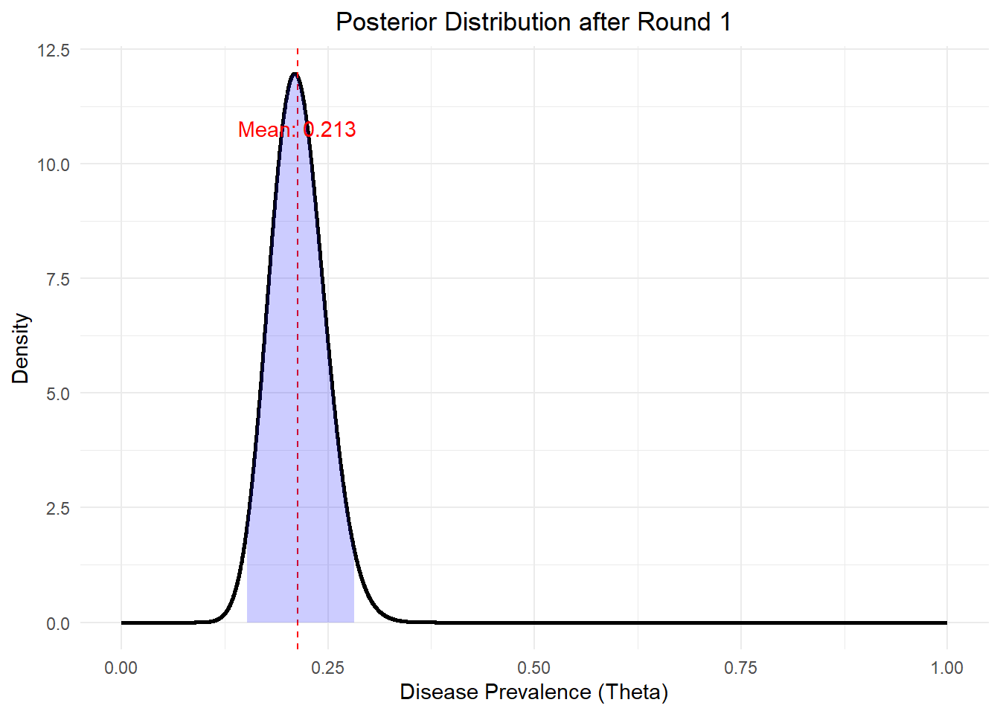
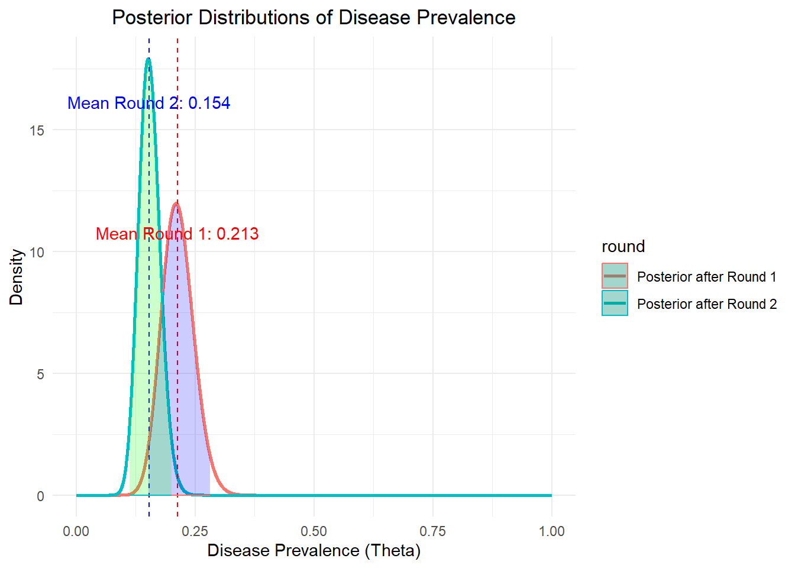
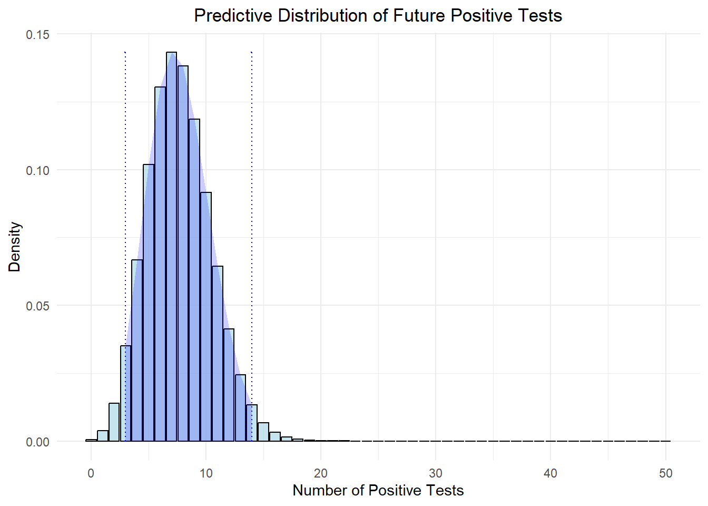

In Bayesian statistics, we use a powerful framework to update our beliefs based on new evidence. Unlike traditional frequentist methods, Bayesian approaches take into account prior information and produce a posterior distribution that reflects updated beliefs after observing the data. In this tutorial, we will walk through a simple Bayesian modeling process using regional disease testing as a case study.
What is this post about?
This is part of my Bayesian Inference series, where I present problems (mostly in public health settings) and apply Bayesian approaches.
Who is this for? And what’s the motivation?
I’ve been working as a data scientist at a higher institution for the past 2 years, supporting data operations from public health authorities and researchers. However, I’ve noticed that my job has started to shift more towards data management and software engineering but I don’t want my modeling skills to get rusty. Working at a university has its perks, such as many opportunities to teach, and I’ve learned a lot from participating in workshops. I believe that mastering knowledge doesn’t always mean being able to pass it on. For this reason, I want to create theory-focused tutorials with R or Python scripts that follow good software engineering principles. I want to help people, including myself, to master the theory behind basic Bayesian models. These tutorials are aimed at those who are passionate about Bayesian Inference and would like to refresh their knowledge of Bayesian 101 Modeling.
Case Study
Imagine a public health department conducting tests for a contagious disease in a specific community. Their goal is to estimate the prevalence of the disease in this community, which represents the probability that an individual in the community has the disease.
Assumptions
To apply the Bayesian method, we start with a set of assumptions:
Binary Outcomes: Each test result is either positive or negative.
Independence: Each test result is assumed to be independent of others.
Identical Distribution: Each individual in the population has the same probability of testing positive.
Build A Model
Given these assumptions, we can treat the tests as independent and identically distributed random variables \(x_i\) following the Bernoulli distribution. The total number of positive cases \(X\) is a random variable that follows the binomial distribution.
At this point, we have already specified our model. Now is the time to ask ourselves what kind of questions we wish our model to answer. In the public health setting, we are interested in questions like
What is the estimated prevalence of the disease in the community?
How confident are we in our estimate of the disease prevalence?
How does new data (e.g., additional test results) update our beliefs about disease prevalence?
What is the probability that the prevalence exceeds a certain threshold (e.g., 5%)?
How do different prior beliefs about the prevalence affect our posterior estimates?
Given our current estimates, what is the expected number of positive cases in the next 50 tests?
How reliable are our predictions about the number of positive cases in the upcoming tests?
In summary, the typical expectation is to deliver an estimate and communicate the level of confidence in that estimation. You’ll see that once we establish the statistical distribution, addressing these questions will become more straightforward.
Distributions
Let’s derive these distribution functions based on our specified binomial data model. We’ll use these functions to answer the questions listed above.
Likelihood Function
The likelihood function represents the probability of observing the data given a specific value of the parameter. Since the random variable \(X\) follows a binomial distribution, we can write the likelihood as a function of the data given the value of parameters as below:
The prior distribution represents our initial beliefs about the parameter before any data is observed. The Beta distribution is often chosen as the prior distribution in Bayesian modeling for parameters that represent probabilities.
\[
\theta \sim \text{Beta}(\alpha, \beta)
\]
Since Beta distribution is a known distribution, we could write out its probability density function as follows:
Here, I will briefly explain why we want to use Beta distribution as our prior in this example:
Flexibility & Interpretability
The beta distribution is highly flexible and can take on a variety of shapes depending on its two parameters, \(\alpha\) and \(\beta\). This flexibility allows it to represent a wide range of prior beliefs about the probability parameter, in our case, the case rate.
The parameters of the Beta distribution have intuitive interpretations. \(\alpha\) can be thought of as the number of prior successes, and \(\beta\) is the number of prior failures. This makes it easy to incorporate prior knowledge or expert opinions. When we have complete uncertainty of the parameters, we assign the prior to \(Beta(1,1)\), which is equivalent to a uniform distribution.
Conjugate Prior for the Binomial Distribution
What is conjugacy? The Beta distribution is the conjugate prior to the Binomial distribution. This means that when a Beta prior is combined with a Binomial likelihood, the posterior distribution is also a Beta distribution. You can see that this property greatly simplifies the Bayesian updating process when we derive the posterior for the unknown parameters.
How do we translate expert knowledge into hyper-parameters?
Generally, your expert team will provide an expected estimate and their confidence level.
We could derive the expectation and standard deviation from the Beta distribution likelihood.
\[
E(\theta)=\frac{\alpha}{\alpha + \beta}
\]
The concentration of the Beta distribution is determined by \(\alpha+\beta\) A higher sum means more confidence.
In this case study, suppose our public health workers have an estimate of the prevalence rate to be 20% before we roll out the community testing. They have moderate confidence, similar to having results from about 50 prior tests with 10 positives. Therefore, we could set \(\alpha\) to 10 and \(\beta\) to 40.
Posterior Distribution
The posterior distribution combines the prior distribution and the likelihood function using Bayes’ theorem. It represents our updated beliefs about the parameter after observing the data.
The denominator \(\int_0^1 f(x | \theta) \cdot f(\theta) d\theta\) is the normalizing constant ensuring that the posterior distribution integrates to 1. We can see that the posterior distribution is proportional to the product of the prior and the likelihood
The predictive distribution allows us to make predictions about future observations based on the posterior distribution. It incorporates the uncertainty in the parameter estimate.
From the previous notes, we have the prior PDF and likelihood function
Given a Beta prior, the predictive distribution is a Beta-Binomial Distribution modeling the number of successes in 𝑛 trials when the probability of success \(\theta\) is uncertain.
Now, I’m pretty confident that we’re equipped with all the tools we need to answer those questions. Our testing team just got back with the first round of testing data: 100 individuals were tested, and 22 tested positive.
Estimating Disease Prevalence
What is the estimated prevalence of the disease in the community?
How confident are we in our estimate of the disease prevalence?
What is the probability that the prevalence exceeds a certain threshold (e.g., 5%)?
These are questions about our estimation of the unknown parameters. We could answer these questions using the posterior distribution’s probability density function.
First, plug in the data and hyper-parameters into the posterior function we get
\[
f(\theta | x) \propto \text{Beta}(32, 128)
\]
Then let’s plot out the distribution
library(dplyr)library(ggplot2)library(tibble)# Function to calculate posterior parametersget_post_params <-function(data, prior) { post_alpha <- prior$alpha + data$x post_beta <- prior$beta + data$n - data$xreturn(list(alpha = post_alpha, beta = post_beta))}# Function to generate posterior data for plottinggenerate_post_pdf_tbl <-function(post_params, label) {tibble(theta =seq(0, 1, length.out =5000),posterior_density =dbeta(theta, post_params$alpha, post_params$beta),round = label )}# Function to calculate credible interval and meanget_credible_interval_and_mean <-function(post_params) { credible_interval <-qbeta(c(0.025, 0.975), post_params$alpha, post_params$beta) mean_posterior <- post_params$alpha / (post_params$alpha + post_params$beta)return(list(credible_interval = credible_interval, mean_posterior = mean_posterior))}# Data for the first rounddata_round_1 <-list(n =100, x =22)prior_params <-list(alpha =10, beta =40)# Calculate posterior for the first roundpost_params_1 <-get_post_params(data_round_1, prior_params)post_pdf_tbl_1 <-generate_post_pdf_tbl(post_params_1, "Posterior after Round 1")credible_info_1 <-get_credible_interval_and_mean(post_params_1)# Plot the posterior distribution for the first roundggplot(post_pdf_tbl_1, aes(x = theta, y = posterior_density)) +geom_line(size =1) +geom_vline(xintercept = credible_info_1$mean_posterior, linetype ="dashed", color ="red") +geom_ribbon(data =filter(post_pdf_tbl_1, theta >= credible_info_1$credible_interval[1] & theta <= credible_info_1$credible_interval[2]), aes(ymax = posterior_density), ymin =0, fill ="blue", alpha =0.2) +labs(title ="Posterior Distribution after Round 1",x ="Disease Prevalence (Theta)",y ="Density") +theme_minimal() +theme(plot.title =element_text(hjust =0.5)) +annotate("text", x = credible_info_1$mean_posterior, y =max(post_pdf_tbl_1$posterior_density) *0.9, label =paste("Mean:", round(credible_info_1$mean_posterior, 3)), color ="red")

Based on our posterior, we estimate the disease prevalence with the posterior expectation value \(E(\theta|X=x)=0.213\). Our confidence is reflected by the spread of the posterior distribution. The standard deviation and the 95% credible interval quantify this confidence.
Updating Beliefs with New Data
One of the core strengths of Bayesian inference lies in its ability to update our beliefs as new data becomes available. Now, suppose we received a new round of testing results: 100 individuals were tested, and 8 tested positive.
Our posterior from the last round now becomes the prior, and we’ll use the new test data to update the posterior:
A pretty easy process. And let’s visualize the updated posterior function:
# Given posterior for the second roundpost_params_2 <-list(alpha =40, beta =220)post_pdf_tbl_2 <-generate_post_pdf_tbl(post_params_2, "Posterior after Round 2")credible_info_2 <-get_credible_interval_and_mean(post_params_2)# Combine both posteriors into one data framepost_pdf_tbl <-bind_rows(post_pdf_tbl_1, post_pdf_tbl_2)# Plot both posterior distributionsggplot(post_pdf_tbl, aes(x = theta, y = posterior_density, color = round, fill = round)) +geom_line(size =1) +geom_vline(xintercept = credible_info_1$mean_posterior, linetype ="dashed", color ="red") +geom_vline(xintercept = credible_info_2$mean_posterior, linetype ="dashed", color ="blue") +geom_ribbon(data =filter(post_pdf_tbl_1, theta >= credible_info_1$credible_interval[1] & theta <= credible_info_1$credible_interval[2]), aes(ymax = posterior_density), ymin =0, fill ="blue", alpha =0.2) +geom_ribbon(data =filter(post_pdf_tbl_2, theta >= credible_info_2$credible_interval[1] & theta <= credible_info_2$credible_interval[2]), aes(ymax = posterior_density), ymin =0, fill ="green", alpha =0.2) +labs(title ="Posterior Distributions of Disease Prevalence",x ="Disease Prevalence (Theta)",y ="Density") +theme_minimal() +theme(plot.title =element_text(hjust =0.5)) +annotate("text", x = credible_info_1$mean_posterior, y =max(post_pdf_tbl_1$posterior_density) *0.9, label =paste("Mean Round 1:", round(credible_info_1$mean_posterior, 3)), color ="red") +annotate("text", x = credible_info_2$mean_posterior, y =max(post_pdf_tbl_2$posterior_density) *0.9, label =paste("Mean Round 2:", round(credible_info_2$mean_posterior, 3)), color ="blue")

Predictive Analysis
Given our current estimates, what is the expected number of positive cases in the next 50 tests?
How reliable are our predictions about the number of positive cases in the upcoming tests?
We need to have the predictive distribution at hand to answer these types of questions. And luckily, from the previous section, we’ve already proven that the predictive distribution follows a Beta-Binomial distribution, which is a function of the data given the prior.
Based on two rounds of testing data and the question statement, we have \(\alpha_{post} = 40\), \(\beta_{post} = 220\), and \(n=50\).
There is currently no base R function for beta-binomial distribution. However, you could try implementing it independently since we already figured out the math.
# Function to calculate Beta-binomial probabilitydbeta_binom <-function(x, n, alpha, beta) {choose(n, x) *beta(alpha + x, beta + n - x) /beta(alpha, beta)}# Function to calculate Beta-binomial quantilesqbeta_binom <-function(p, n, alpha, beta) {sapply(p, function(prob) { q <-0 cumulative_prob <-0while (cumulative_prob < prob) { cumulative_prob <- cumulative_prob +dbeta_binom(q, n, alpha, beta) q <- q +1 }return(q -1) })}
Now let’s try to visualize the predictive distribution
# Predictive distribution parametersn_future <-50# Number of future trialsalpha_post <- post_params_2$alphabeta_post <- post_params_2$beta# Generate the predictive distribution using Beta-binomialpred_x <-0:n_futurepred_density <-sapply(pred_x, function(x) dbeta_binom(x, n_future, alpha_post, beta_post))# Calculate the 95% predictive interval for the predictive distributionpredictive_interval <-qbeta_binom(c(0.025, 0.975), n_future, alpha_post, beta_post)# Create a data frame for the predictive distributionpred_df <-tibble(x = pred_x,density = pred_density)# Plot the predictive distributionggplot(pred_df, aes(x = x, y = density)) +geom_bar(stat ="identity", fill ="lightblue", color ="black", alpha =0.7) +geom_errorbar(aes(x = predictive_interval[1], ymin =0, ymax =max(density)), linetype ="dotted", color ="blue", width =0.2) +geom_errorbar(aes(x = predictive_interval[2], ymin =0, ymax =max(density)), linetype ="dotted", color ="blue", width =0.2) +labs(title ="Predictive Distribution of Future Positive Tests",x ="Number of Positive Tests",y ="Density") +theme_minimal() +theme(plot.title =element_text(hjust =0.5)) +# annotate("text", x = alpha_post / (alpha_post + beta_post) * n_future, y = max(density) * 0.9, # label = paste("Mean:", round(alpha_post / (alpha_post + beta_post) * n_future, 2)), color = "red") +geom_ribbon(data =filter(pred_df, x >= predictive_interval[1] & x <= predictive_interval[2]), aes(ymax = density), ymin =0, fill ="blue", alpha =0.2)

Therefore, given our current estimates, we expect approximately 8 positive cases in the next 50 tests. Based on the 95% predictive interval (approximately 4 to 12), our predictions are reliable within this range, indicating that while there’s some uncertainty, we have a high probability that the true count will fall within these bounds.
Sensitivity Analysis
TBD
Questioning the Assumptions
Now if you are already pretty deep into the Bayesian inferences world, you might notice that we’ve greatly simplified this problem to a coin-toss problem. Our peers could challenge our model by questioning our assumptions.
Our i.i.d. assumption states that each test result (whether positive or negative) is independent of the others and that each test has the same probability \(\theta\) of being positive (identically distributed). This means the probability of a positive test is the same for every individual tested and that one person’s test result does not influence another’s.
However, there could be some potential issues with the i.i.d assumptions in public health testing. I’ll enumerate some of them and briefly discuss how to address them.
Cluster Infections
In a real-world scenario, infections might not be evenly distributed across the population. There could be clusters of infections due to localized outbreaks or hot-pots, leading to correlations between test results.
To address this, we should begin with identify and model clusters within the data. For example, use hierarchical models that allow for different prevalence rates in different subgroups or locations.
Testing Bias
The way individuals are selected for testing might not be random. For example, people with symptoms or known exposure to the disease might be more likely to get tested, which can skew the results.
If you are from the ML world, you already know what to do. We could include covariates that account for factors affecting the probability of a positive test, such as symptoms, exposure history, or demographic factors.
Temporal Changes
As the title suggested, the prevalence of the disease might change over time due to factors such as public health interventions, changes in behavior, or natural progression of the outbreak. This means the probability of a positive test could vary over time. We should consider using time series models or Bayesian hierarchical models that account for changes in prevalence over time.